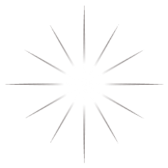

빈Visual designer
Yu Yebeen
이름 속 斌(빛날 빈)에 소통의 文(문)과 기술의 武(무)를 담아,
유연한 소통과 세심한 실행력으로 브랜드를 빛내는 디자이너 유예빈입니다.
文 · 소통
Better design ↪︎ through communication
다양한 의견을 듣고 생각을 나누며,
서로의 관점을 이해하고 더 나은 디자인 방향을 함께 찾아갑니다.
武 · 기술
Skills that ↪︎ bring ideas to life
쌓아온 디자인 경험에 새로운 기술을 더해,
아이디어를 구체화하고
세심한 디테일로 완성도를 높입니다.
Brand experience
다양한 브랜드 경험으로 디자인의 깊이를 더합니다.
각 브랜드의 특성과 메시지를 이해하고,
매체와 목적에 맞는 디자인으로 구체화해 왔습니다.
SK텔레콤 · S-OIL · 효성 · 키움투자자산운용 · HILTI KOREA
I ↪︎
Experience across brands, depth in design.
Selectedwork
브랜드의 메시지를 명확하게 담아낸 작업들
웹사이트와 웹진, 뉴스레터, SNS 콘텐츠까지


Experience &
Career
Since: 2016
미디어브레인[2023–2026]
- 기업 홈페이지 운영 및 콘텐츠 디자인
- SK telecom 홈페이지 · 웹진 ‘AI Life Magazine’
- 키움투자자산운용 뉴스레터 ‘연금술사’
- S-OIL · HYOSUNG · HILTI KOREA SNS
- UNICEF KOREA · S-OIL SNS 제안 디자인
외주 프로젝트[Freelance]
- 컬리 라이브 커머스 배너
- 마리몽듀 ‘Mentos’ 상세페이지
- 네이버 쇼핑라이브 · 지그재그 라이브 그래픽
판씨앤씨[2022]
- 판쇼라이브 앱 UI · 라이브 배너 · 기획전 디자인
미니쉬치과[2021–2022]
- 온·오프라인 광고 배너
- 홈페이지 · 콘텐츠 디자인
- 원내 사인물 디자인
아르푸가구[2018–2020]
- 헤르짐머 자사몰 구축 · 상세페이지 · 이벤트 디자인
- 이벤트 · 광고 디자인
- 전시 디자인
K&H 커뮤니케이션즈[2016–2018]
- 이랜드 행사 안내 카탈로그 편집 디자인
Education[01]
- 계원예술대학교 시각디자인과
Skills[08]
- Photoshop · Illustrator · After Effects
- Figma
- ChatGPT · Gemini · Claude · Midjourney